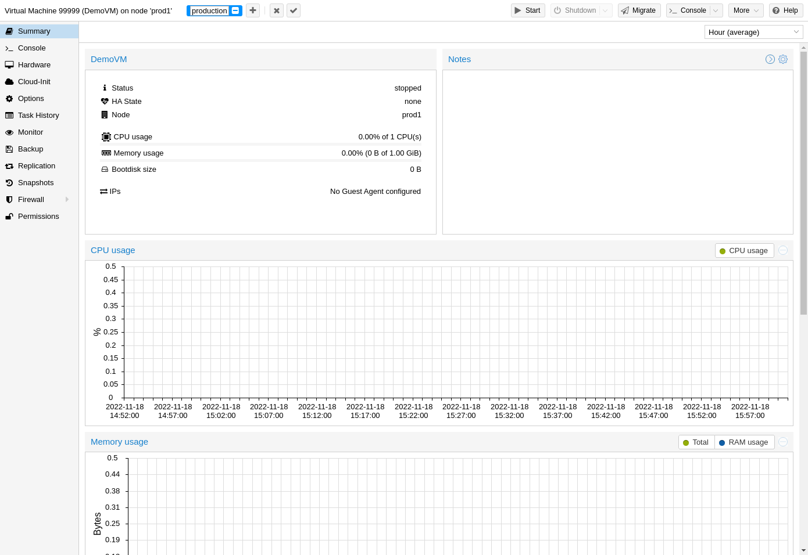
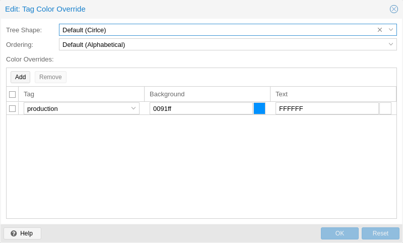
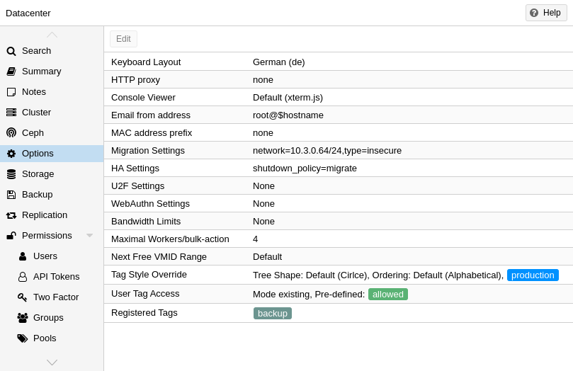

For organizational purposes, it is possible to set tags for guests.
Currently, these only provide informational value to users.
Tags are displayed in two places in the web interface: in the Resource Tree and
in the status line when a guest is selected.
Tags can be added, edited, and removed in the status line of the guest by
clicking on the pencil icon. You can add multiple tags by pressing the +
button and remove them by pressing the - button. To save or cancel the changes,
you can use the ✓ and x button respectively.
Tags can also be set via the CLI, where multiple tags are separated by semicolons. For example:
# qm set ID --tags 'myfirsttag;mysecondtag'

By default, the tag colors are derived from their text in a deterministic way. The color, shape in the resource tree, and case-sensitivity, as well as how tags are sorted, can be customized. This can be done via the web interface under Datacenter → Options → Tag Style Override. Alternatively, this can be done via the CLI. For example:
# pvesh set /cluster/options --tag-style color-map=example:000000:FFFFFF
sets the background color of the tag example to black (#000000) and the text
color to white (#FFFFFF).

By default, users with the privilege VM.Config.Options on a guest (/vms/ID)
can set any tags they want (see
Permission Management). If you want to
restrict this behavior, appropriate permissions can be set under
Datacenter → Options → User Tag Access:
free: users are not restricted in setting tags (Default)
list: users can set tags based on a predefined list of tags
existing: like list but users can also use already existing tags
none: users are restricted from using tags
The same can also be done via the CLI.
Note that a user with the Sys.Modify privileges on / is always able to set
or delete any tags, regardless of the settings here. Additionally, there is a
configurable list of registered tags which can only be added and removed by
users with the privilege Sys.Modify on /. The list of registered tags can be
edited under Datacenter → Options → Registered Tags or via the CLI.
For more details on the exact options and how to invoke them in the CLI, see Datacenter Configuration.